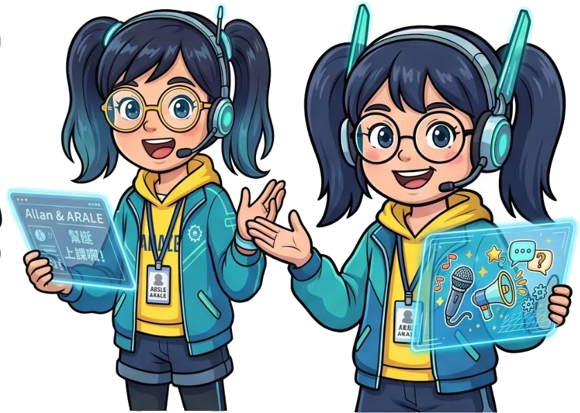
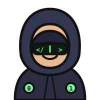
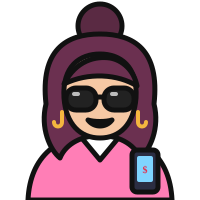

拱豬規則說明
四個人、一副 52 張牌、沒有隊友。目標很簡單：別吃到豬、少吃紅心、想辦法把羊帶回家。打完一手就結算一次，累計分數最高的人拿下證書。

登場角色 CAST




一手牌怎麼打 FLOW
- 發牌：每人 13 張。座位順序是 Allan → 黑帽阿駭 → 阿拉蕾 → 釣魚姐，依此輪流（順時針）。
- 亮牌：手上有 ♠Q、♦J、♣10、♥A 的人，可以選擇「亮」出來，讓那張牌的效果加倍（詳見下方「亮牌」）。
- 首墩：拿到 ♣2 的人先出牌，可以出任何一張。
- 跟牌：其他人依序出一張。有引牌的花色就必須跟；沒有該花色才可以墊任何牌。
- 收墩：引牌花色中點數最大的人收下這一墩的 4 張牌，並由他引下一墩。A 最大、2 最小，沒有王牌。
- 結算：13 墩打完，每個人依自己收到的「分數牌」計分，加進累計分數。
分數牌 SCORING CARDS
| 牌 | 名稱 | 分數 | 亮牌後 |
|---|---|---|---|
| 豬 ♠Q | 豬（本站叫「勒索豬」） | -100 | -200 |
| 羊 ♦J | 羊（本站叫「資安預算羊」） | +100 | +200 |
| 變 ♣10 | 變壓器：把你這一手的總分 ×2 | ×2 | ×4 |
| ♥ A | 紅心 A | -50 | 亮 ♥A 時 所有紅心 ×2 |
| ♥ K | 紅心 K | -40 | |
| ♥ Q / J | 紅心 Q、J | -30 / -20 | |
| ♥ 10~5、4~2 | 紅心 10 到 5 各 -10；4、3、2 為 0 分 | -10 / 0 |
十三張紅心加起來是 -200，其他牌（含 ♠ 其他牌、♦ 其他牌、♣ 其他牌）都是 0 分。
特殊情況
- 全紅：一個人收齊 13 張紅心，紅心從 -200 變成 +200。這時如果他也收了豬，豬會翻正變成 +100。
- 變壓器單獨：收到 ♣10，但沒有任何其他分數牌（沒豬、沒羊、一張紅心都沒有），算 +50（亮牌則 +100）。
- 變壓器加倍：只要還有其他分數牌，♣10 就把你這一手的總分乘 2（亮牌乘 4）。好分變更好，壞分變更慘。
- 大滿貫：一個人收齊全部 16 張分數牌：(200 + 100 + 100) × 2 = +800。
亮牌 EXPOSURE
發完牌後，手上有 ♠Q、♦J、♣10、♥A 的人可以把它亮給大家看，效果加倍：豬變 -200、羊變 +200、變壓器變 ×4（單獨 +100）、亮 ♥A 則全部紅心 ×2。亮牌的效果是針對最後收到這張牌的人，不一定是亮牌的人。
限制：亮過的牌，在該花色第一次被引出的那一墩不能打出（包含自己引牌），除非手上那個花色只剩這一張。在別的花色的墩裡墊出去，則不受限制。遊戲中被限制的牌會變暗，點不下去。
阿拉蕾的小提醒：手上黑桃很多又有很多小黑桃，才考慮亮豬；方塊 A、K 都在手上，亮羊比較穩。亮 ♥A 適合紅心很少的時候，讓吃紅心的人更痛！
計分範例 EXAMPLES
收到 ♠Q、♥K、♥5
-100 − 40 − 10 = -150
收到 ♦J、♥A、♣10
(100 − 50) × 2 = +100
只收到 ♣10（有亮牌）
單獨變壓器 = +100
收到 ♠Q、♥A，♣10 有亮牌
(-100 − 50) × 4 = -600
收齊 13 張紅心 + ♠Q
200 + 100 = +300
16 張分數牌全收
(200 + 100 + 100) × 2 = +800
散場與稽核判定 GAME END
開局時可以選：有人累計到 -1000 分就散場（傳統打法），或快速局打 4 手。散場時累計分數最高的人，獲頒「拱豬管理系統驗證證書」。
每一手打完，Allan 會出一份稽核報告，依這一手的分數給判定：
| 本手分數 | 稽核判定 |
|---|---|
| 全收 16 張 | 大滿貫 · 卓越績效 |
| > 0 | 優良實務 |
| 0 | 符合 |
| -1 ~ -99 | 觀察事項 |
| -100 ~ -299 | 次要不符合 |
| ≤ -300 | 主要不符合 |
新手攻略 TIPS
- 釣豬：豬還沒出現、而你手上沒有豬時，出小黑桃逼拿豬的人跟牌。
- 別亂出黑桃 A、K：豬還在外面時，你的 ♠A、♠K 很容易被塞豬。沒黑桃可跟時，先把它們墊掉。
- 斷門：早點把某一門出光，之後就能在那一門墊掉豬或大紅心。
- 搶羊：方塊大牌都出完了，手上的 ♦J 就可以安心領回家。
- 卡住了？按「問阿拉蕾」，她會把建議的牌標出來，順便講原因。

Allan：豬就是一個高風險，風險處置四選一：規避、降低、移轉、接受。拱豬這個遊戲，就是把「移轉」練到爐火純青。
語音與對話 VOICE
對話使用瀏覽器內建的語音合成（台灣華語）。Allan 預設使用台灣男聲（Microsoft YunJhe／Zhiwei），阿拉蕾預設使用台灣年輕女聲（Microsoft HsiaoYu／HsiaoChen／Yating 等）。用 Microsoft Edge 開啟可以拿到最完整的台灣聲線；其他瀏覽器會自動挑最接近的中文聲線，再用音高區分兩人。到牌桌右上角「設定」可以指定聲線、調整音高和語速，每一句對話旁的「▶ 播放」可以重聽。
本站採用的是常見的拱豬玩法之一，各地規則略有不同，例如有些地方首墩規定必須出 ♣2、或不採用亮牌，請以本頁為準。